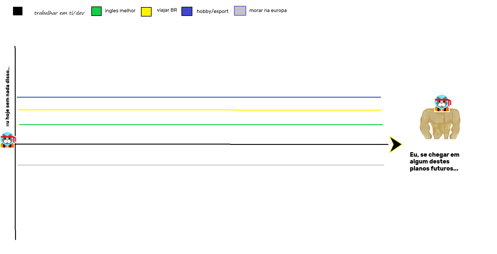

Trabalhar com TI seria estar dentro da area fazendo ou programacao ou algo que me deixe contente e ganhe suficiente para sentir tendo uma vida que me agrada.
Melhorar meus ingles que nao é dos bons para se ter uma conversa profunda ou de trabalho ainda é necessario melhorar muito.
Viajar por alguns estado do brasil tbm seria uma boa coisa que desejo, é muito injusto ser moradaor daqui nascer aqui e nem ao menos conhecer outro lugares sem gastar mais de uma salario.
Acho que para nao ficar bitolado so fazendo uma coisa ter ao menos um hobby ou praticar um esporte minimo que seja para ter saude mental e fisica ja ajudaria nao se sentir tao lixo.
Um dos maiores planos é morar fora a vida pode ser muito boa la quando voce tem referencia de comparacao com a vida no brasil.

Ainda nao sei bem o que fazer com essas informacoes mas como se trata de um projeto acredito que pode ser melhorar e lapidar para organizar as ideias as informacoes e tirar alguma aprendizado util e pratico de tudo isso.